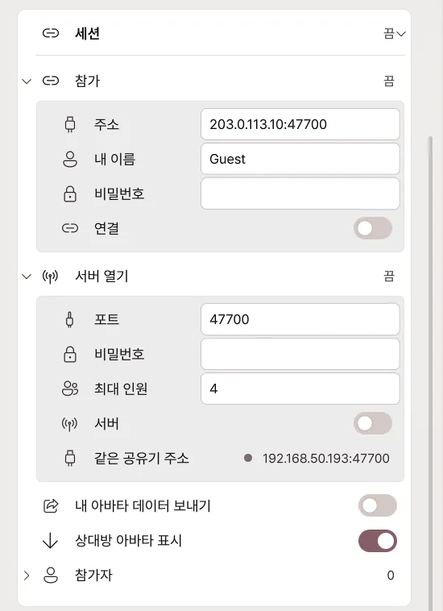
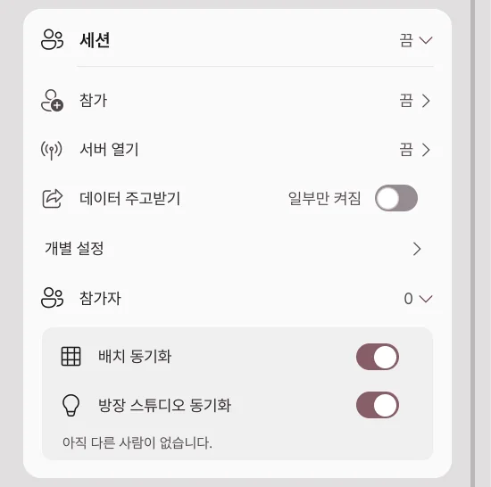

원격 합방
서로 다른 PC에서 움직이는 아바타를 한 장면에 모읍니다. 참가자 모두 Pro와 원격 세션을 지원하는 같은 버전이 필요합니다.
방송 → 연결 맨 아래의 세션 카드를 엽니다. 방장 한 명이 서버를 열고, 나머지는 방장이 알려 준 주소로 참가합니다.
방장: 방 열기

- 서버 열기를 펼칩니다.
- 내 이름·비밀번호·최대 인원을 정합니다.
- 서버 스위치를 켭니다.
- 참가자에게 접속 주소와 비밀번호를 알려 줍니다.
| 항목 | 무엇을 정하나요? |
|---|---|
| 포트 | 접속에 사용할 번호입니다. 기본은 47700입니다. |
| 최대 인원 | 방장을 포함한 참가 인원입니다. |
| 비밀번호 | 참가할 때 필요한 비밀번호입니다. |
| 서버 스위치 | 방을 열거나 닫습니다. 닫으면 참가자 연결도 끝납니다. |
| 내 주소 | 방장 PC의 내부 주소입니다. 다른 집의 친구에게는 공인 주소와 포트를 알려 주세요. |
친구가 들어오지 못하면 아래 연결이 안 될 때를 확인하세요.
참가자: 들어가기
- 참가를 펼칩니다.
- 주소에 방장이 알려 준
주소:포트를 넣습니다. - 내 이름과 비밀번호를 입력합니다.
- 연결 스위치를 켭니다. 처음 들어갈 때 나오는 입장 안내를 읽고 한 번 동의합니다.
- 참가자 목록에 서로의 이름이 나타나는지 확인합니다.
나가려면 연결 스위치를 끕니다.
아바타 표시와 자리

| 항목 | 켜거나 바꾸면 |
|---|---|
| 데이터 주고받기 | 아바타 데이터를 세션 참가자와 주고받는 스위치 하나입니다. 기본은 꺼짐입니다. |
| 개별 설정 | 펼치면 다른 사람의 아바타 보기, 내 아바타 데이터 보내기를 따로 정합니다. |
| 대체 아바타 | 상대 모델을 사용할 수 없을 때 대신 표시할 모델을 고릅니다. |
| 배치 동기화 | 방장이 정한 자리와 개인 보정을 반영합니다. |
| 자리 잠금 | 방장이 참가자의 위치·회전·크기 변경을 제한합니다. |
| 위치·회전·크기 | 선택한 참가자의 배치를 조절합니다. |
| 다시 찾기 | 이미 보유한 동일한 VRM을 로컬 폴더에서 다시 찾습니다. |
직접 정한 상대 위치는 내 화면에만 적용될 수 있습니다. 여러 사람이 같은 배치를 보려면 배치 동기화를 함께 사용하세요.
아바타를 보내기 전
아바타·의상·소품의 전송 허용 여부는 각 원제작자의 약관을 따릅니다. Pro 구매나 암호화가 공유 허락을 대신하지 않습니다. 재배포가 금지된 VRM은 전송하지 않습니다.
전송할 수 없다면 모델을 보내는 스위치는 끄고 대체 아바타를 사용하세요. 콘텐츠 이용 조건에서 책임과 권한을 확인하세요.
연결이 안 될 때
먼저 방장 서버가 켜져 있는지, 주소·포트·비밀번호가 맞는지, 참가자 버전이 같은지 확인합니다.
친구가 다른 집에서 접속하지 못해요 — 포트포워딩
방장 공유기에서 외부 접속을 방장 PC로 보내도록 설정합니다.
- 방장 PC의 IPv4 주소를 확인합니다.
- 공유기 관리 화면의 포트포워딩·포트 매핑 메뉴를 엽니다.
- 아래 규칙을 만듭니다.
| 설정 | 넣을 값 |
|---|---|
| 내부 IP | 방장 PC의 IPv4 주소 |
| 외부 포트 | 47700 |
| 내부 포트 | 47700 |
| 프로토콜 | TCP와 UDP 모두 |
앱에서 포트를 바꿨다면 양쪽 포트도 같은 번호로 맞춥니다. 참가자는 방장 공유기의 공인 주소와 포트로 접속합니다. PC 내부 주소인 192.168로 시작하는 주소는 다른 집에서 직접 접속할 수 없습니다.
주소와 포트가 맞는데 응답이 없어요 — 방화벽
방장 PC의 Windows 방화벽에서 Avatar Live 통신을 허용했는지 확인합니다. 포트 규칙을 직접 만들면 세션 포트의 TCP·UDP 인바운드를 허용합니다. 방화벽 전체를 끌 필요는 없습니다.
PC 내부 IP가 바뀌었다면 공유기의 포트포워딩 대상도 바꿉니다. 공유기에서 DHCP 주소 예약을 해 두면 같은 PC의 주소가 바뀌는 일을 줄일 수 있습니다.
포트포워딩과 방화벽을 맞춰도 안 돼요 — 공유기·통신사
공유기의 WAN 주소가 사설 주소이거나 통신사의 CGNAT라면 내 공유기 설정만으로 외부 접속이 열리지 않을 수 있습니다. 상위 공유기 설정 또는 통신사의 공인 IP 지원을 확인하세요.
같은 Wi-Fi에서 공인 주소로 시험하면 공유기의 루프백 지원에 따라 실패할 수 있습니다. 다른 네트워크에 있는 참가자와 시험하세요.
세션 데이터 안내
- 한 참가자의 PC가 방장 서버가 됩니다. Avatar Live 운영 서버에 아바타를 보관하는 방식은 아닙니다.
- 전송에 동의한 아바타 데이터는 AES-256-GCM으로 암호화되어 방장·수신 PC에 세션용 임시 캐시로 저장됩니다.
- 세션이 종료되거나 퇴장하면 임시 캐시가 삭제되고 복호화 키도 폐기됩니다.
- 암호화된 캐시만으로는 원본 아바타 파일을 추출하거나 복원할 수 없습니다.
- 실시간 자세·표정·제어 메시지는 아바타 파일 전송과 별개이며 같은 종단 간 암호화가 적용되지 않습니다.
- 파일 전송의 암호화가 아바타·의상·소품의 재배포 권한을 만들지는 않습니다.